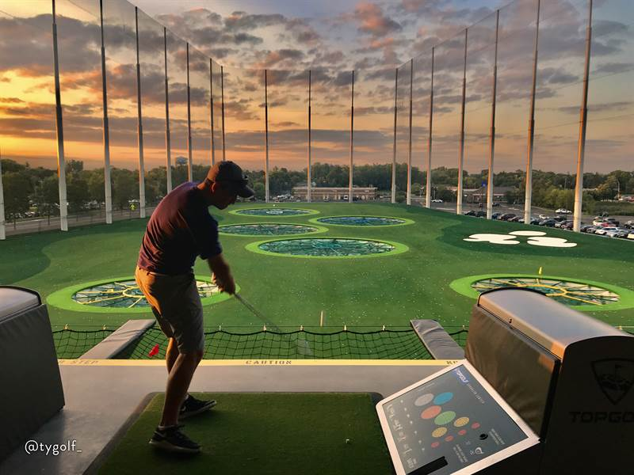
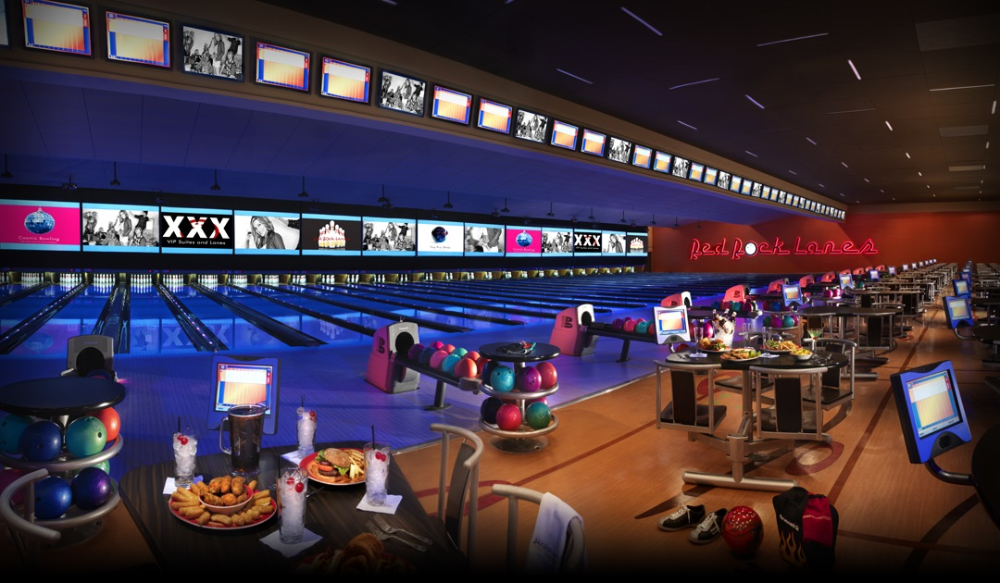
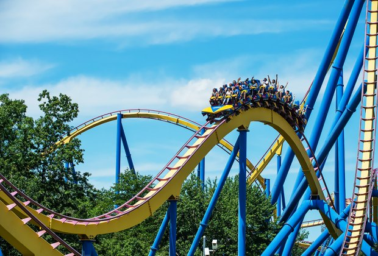

Top Golf
Come and putt at the Tipton Hotel's luxurious golf course! Designed by golf course architect legend Chris Jones. If you are a guest and would like to play on this magnificent 21- hole course, then you are in for a treat! During the nights, candles and lamps will be lit up all around the course with beautiful music playing. Hotel staff will also be checking up on the guests with food and refreshments as they play.
Open Sunday - Thursday 5pm to 11pm, Friday - Saturday 5pm - 2am

Bowling
Just roll with it! Whether you are out for a ten-pin amusement, perfect 300 game, the Tipton Hotel's bowling center located in the first floor of the hotel is the perfect place to spend some time. Hone your skills on one of our 100 beautiful lanes with brand new pinsetters, lavish ball returns and high tech scoring systems. If you're just looking for a watch, there is a lounge area where you're able to relax and observe.
Call 408-322-4249 to reserve a lane!

Rollercoasters
Looking for thrills during your stay at the Tipton Hotel? Then we got you covered! From heart racing rollercoasters to gentler options for kids. Our Rollercoasters are not one for small talk, they cut right to the chase with our most popular ride being a 160 foot hill and 160 foot drop going at top speeds of 100 mph and lasting a total of 3 minutes!
Rated the scariest and most thrilling coaster in all of America by NY Times.